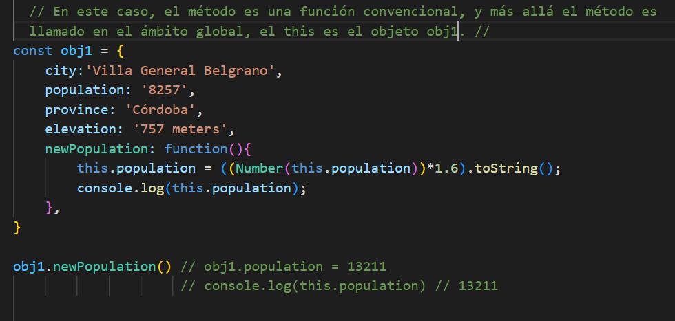

Apuntes Clases JavaScript - Objeto this y sus Scopes, sin y con arrow functions - pag. 12
This asociado a Objetos:
Un objeto al ser creado, genera automaticamente un this. Este this representa el próprio objeto.
El this va a representar un objeto, dependendo adonde se ejecuta el método si es una arrow function o si es una funcion convencional, y como se declara la función callback adentro de otra función.
Al usar eventos de escucha o otros métodos de manipulación, si la callback es una función convencional, el this devuelto es el objeto elemento. Esto porque el metodo usado es un método de este elemento. Ej.: document.getElementById().addEventListener().
Si en el método de escucha si usa una arrow function como parametro, el this devuelto es el objeto padre, o sea objeto window.
Importante! Las Arrow functions no se deben usar en las declaraciones de métodos, ya que no tiene su próprio this. Las arrow functions se usan cuando se declara (como variable), o en callback functions (funciones que son parametros de otras funciones). Vea la imagen:
- Una funcion declarada convencionalmente (function name(){ ... }), cria un this proprio, con un escopo interno, a menos que sea un método de un objeto, en este caso, el this de la función asume ser el objeto. 
- Como dicho arriba, se salienta que el this de un método de objeto, es el próprio objeto.
- Una función declarada como una arrow function no tiene su propriothis. O sea, el this asume el escopo externo a esta callback, referiendose al objeto padre.
- Para el caso de que un método usa una callback (función) con una expresión conteniendo un this adentro esta callback debe ser una arrow function por los motivos citados anteriormente.